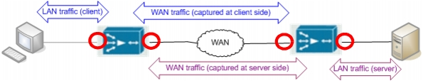

Capturing Application Traffic in a WAN-Accelerated Environment A pair of synchronous accelerators adds two tiers and one intermediate segment to any application transaction. This means that, to analyze an application in a WAN-optimized environment, you must capture traffic at four different locations: 1) LAN traffic at the client 2) WAN traffic between the accelerators (captured at client side) 3) WAN traffic between the accelerators (captured at server side) 4) LAN traffic at the server To capture an application in the environment shown in the following figure, you might need to capture at four different locations. You might be able to capture at fewer locations, however, depending on the network configuration and the specific type of accelerator. Some devices enable you to capture both LAN and WAN traffic in one packet trace; in this case you can capture at two locations only (that is, on the devices themselves). Figure 11-1 Required Traffic for Two-Tier Application in a WAN-Optimized Environment  This section includes the following topics: • Direct Captures (On the Accelerators) — Capturing on WAN Accelerators (Direct Captures): Workflow Descriptions — Selecting the Interfaces on the Accelerator (Single- vs. Dual-Interface Captures) • Capturing on Cisco and Riverbed Accelerators • Capturing on Other Accelerators • Indirect Captures (Near the Accelerators) — Capturing near WAN Accelerators (Indirect Captures): Workflow Descriptions